CL_MATCONT implements a continuation method that is slightly different from
the pseudo-arclength continuation.
Figure 3:
Moore-Penrose continuation
| 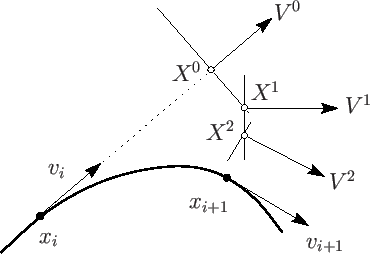 |
Definition 1
Let  be an 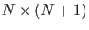 matrix with maximal rank. Then the Moore-Penrose inverse of is defined by
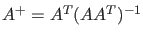.
be an 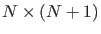 matrix with maximal rank. Then the Moore-Penrose inverse of is defined by
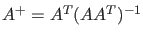.
Let be an matrix with maximal rank. Consider the following linear system with
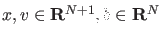:
| 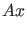 |
 |
|
(8) |
| 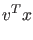 |
|
|
(9) |
where  is a point on the curve and
is a point on the curve and  its tangent vector with respect to , i.e. 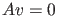.
Since 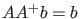 and
its tangent vector with respect to , i.e. 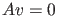.
Since 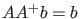 and
 , a solution of this system is
, a solution of this system is
Suppose we have a predicted point  using (1). We want to find the point on the curve which is nearest to , i.e. we are trying to solve the optimization problem:
using (1). We want to find the point on the curve which is nearest to , i.e. we are trying to solve the optimization problem:
So, the system we need to solve is:
| 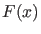 |
|
|
(12) |
| 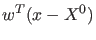 |
|
|
(13) |
where  is the tangent vector at point . In Newton's method this system is solved using a linearization about . Taylor expansion about gives:
is the tangent vector at point . In Newton's method this system is solved using a linearization about . Taylor expansion about gives:
|
|
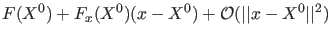 |
(14) |
|
|
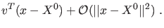 |
(15) |
So when we discard the higher order terms we can see using (8) and (10) that the solution of this system is:
However, the null vector of  is not known, therefore we approximate it by 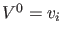, the tangent vector at
is not known, therefore we approximate it by 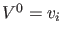, the tangent vector at  . Geometrically this means
we are solving 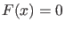 in a hyperplane perpendicular to the previous tangent vector. This is illustrated in Figure 3. In other words, the extra function
. Geometrically this means
we are solving 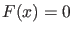 in a hyperplane perpendicular to the previous tangent vector. This is illustrated in Figure 3. In other words, the extra function  in (2) becomes:
in (2) becomes:
where
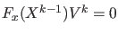 for 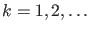.
Thus, the Newton iteration we are doing is:
| 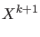 |
|
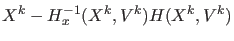 |
(18) |
| 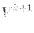 |
|
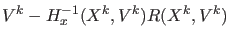 |
(19) |
One can prove that under the same conditions as for the pseudo-arclength continuation,
the Newton iterations (18) and (19) converge to a point on the
curve  and the corresponding tangent vector 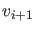, respectively.
In the pseudo-arclength continuation, we had to compute a tangent vector when a new point
was found. In this case however, we already compute the tangent vectors 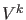 at each
iterate (19), so we only need to normalize the computed
tangent vectors.
and the corresponding tangent vector 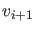, respectively.
In the pseudo-arclength continuation, we had to compute a tangent vector when a new point
was found. In this case however, we already compute the tangent vectors 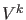 at each
iterate (19), so we only need to normalize the computed
tangent vectors.